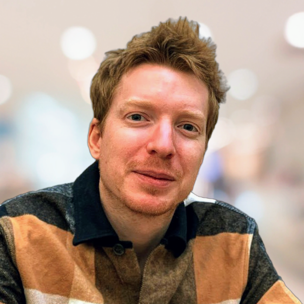

Welcome!
Maître de conférences (~ associate professor) in LaBRI.
My research interests lie mainly at the interface between algorithms, complexity theory and machine learning.
Contact: guillaume.lagarde [at] ens-lyon [dot] org

Latest news
- Joining LaBRI! Starting September I will join the Formal Methods group in LaBRI, as a maître de conférences.
- Henri Potier à l'école de la complexité (chapitre 2), blog Binaire sur Le Monde, avec Sylvain Perifel.
- Scaling neural program synthesis with distribution-based search is accepted at AAAI’2022. Joint work with Nathanaël Fijalkow, Théo Matricon, Kevin Ellis, Pierre Ohlmann and Akarsh Potta.
- The complexity of learning linear temporal formulas from examples is accepted at ICGI’2021. Joint work with Nathanaël Fijalkow.
Short bio
- 2021 ➝ 2023: I worked at Criteo as a research engineer.
- 2019 ➝ 2021: I was a postdoc in LaBRI, Bordeaux, in the DeepSynth CNRS Momentum project, with Nathanaël Fijalkow.
- 2018 ➝ 2019: I was a postdoc in the Approximation and Proof Complexity group at KTH Royal Institute of Technology, hosted by Jakob Nordström, Johan Håstad and Per Austrin.
- 2015 ➝ 2018: I was doing my PhD in IRIF (University Paris Diderot), under the supervision of Sophie Laplante and Sylvain Perifel. You can find the manuscript of my thesis here: Contributions to Arithmetic Complexity and Compression.
Publications
Conferences and Journals
- DeepSynth: Scaling Neural Program Synthesis with Distribution-based Search, with Nathanaël Fijalkow, Théo Matricon, Kevin Ellis.
- Scaling neural program synthesis with distribution-based search, with Nathanaël Fijalkow, Théo Matricon, Kevin Ellis, Pierre Ohlmann and Akarsh Potta.
- 36th AAAI Conference on Artificial Intelligence (AAAI 2022)
- arxiv version
- The complexity of learning linear temporal formulas from examples, with Nathanaël Fijalkow.
- 15th International Conference on Grammatical Inference (ICGI 2021)
- Improving Ultrametrics Embeddings Through Coresets, with Vincent Cohen-Addad and Rémi de Joannis de Verclos.
- 38th International Conference on Machine Learning (ICML 2021)
- On Efficient Low Distortion Ultrametric Embedding, with Vincent Cohen-Addad and Karthik C. S.
- arxiv version
- 37th International Conference on Machine Learning (ICML 2020)
- d-Galvin families, with Johan Håstad and Joseph Swernofsky
- The Electronic Journal of Combinatorics, Volume 27, Issue 1 (2020)
- Lower bounds for arithmetic circuits via the Hankel matrix, with Nathanael Fijalkow, Pierre Ohlmann and Olivier Serre
- eccc version
- 37th International Symposium on Theoretical Aspects of Computer Science (STACS 2020)
- Trade-offs Between Size and Degree in Polynomial Calculus, with Jakob Nordström, Joseph Swernofsky and Dmitry Sokolov
- Non-commutative computations : lower bounds and PIT, with Guillaume Malod and Sylvain Perifel
- Lempel-Ziv: a “one-bit catastrophe” but not a tragedy, with Sylvain Perifel
- arXiv version
- Proceedings of the 29th ACM-SIAM Symposium on Discrete Algorithms (SODA 2018)
- Lower bounds and PIT for Non-Commutative Arithmetic circuits with Restricted Parse Trees, with Nutan Limaye and Srikanth Srinivasan
- eccc version
- 42nd International Symposium on Mathematical Foundations of Computer Science (MFCS 2017)
- Computational Complexity (journal version)
- De Bruijn-Erdős type theorems for graphs and posets, with Pierre Aboulker, David Malec, Abhishek Methuku and Casey Tompkins
- arXiv version
- Discrete Mathematics, Volume 340, 2017
Scientific popularization
- Henri Potier à l'école de la complexité, avec Sylvain Perifel
- Blog Binaire sur Le Monde
- Chapitre 1
- Chapitre 2
- La théorie de la complexité algorithmique
- Un seul bit vous manque, et ça ne compresse plus…